Genome assembly and assembly QC - Introduction short version
Contributors
| Author(s) |
|
| Editor(s) |
|
Questions
What do I need to do before starting a genome assembly project?
Quick overview of the steps before the bioinformatic
Definitions of bioinformatics terms for assembly
Definitions of tools used to assess the quality of an assembly
Genome assembly
.left[
Goal: Reconstruct the sequences of a complete genome, or as close as possible to the complete genome, from sequences of DNA fragments (the “reads”).
Genome assembly consists of aligning and reconstructing these fragments to form a continuous sequence (that of the chromosomes) or a set of contiguous sequences (called contigs or scaffolds).
]
.image-1[
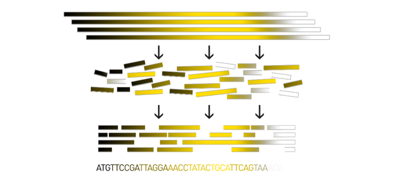
].footnote[https://www.hudsonalpha.org/sequencing-from-scratch-reference-genomes-and-de-novo-sequence-assembly/]
Genome assembly vs alignment
.image-1[
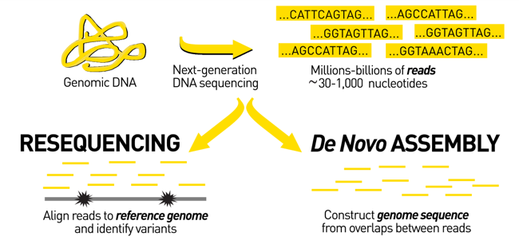
].footnote[https://www.hudsonalpha.org/sequencing-from-scratch-reference-genomes-and-de-novo-sequence-assembly/]
Steps before starting a genome project
.left[
- Step 1: Gather information about the target species : location, overlap with Indigenous People or local communities territories, expected genome size, ploidy, micro-chromosomes, organelles, etc.
What type of data is already available (reference gneomes, raw data, etc) : INSDC (ENA, NCBI, DBNJ)
- Step 2: If appropriate (depending on species and sampling location), engage with local communities, Indigenous people and/or local scientists who may have Traditional Ecological Knowledge (TEK) associated to the species.
Obtain appropriate consent and permits (Nagoya protocol) before sampling.
- Step 3: Build a broad community of collaborators for the project, if possible.
- Step 4: Select the best possible DNA source and an optimal extraction procedure - Sampling is THE key step
- Step 5: Choose an appropriate sequencing technology
- Step 6: Sequence and assemble! ]
Steps before starting a genome project - ERGA model
.image-20[
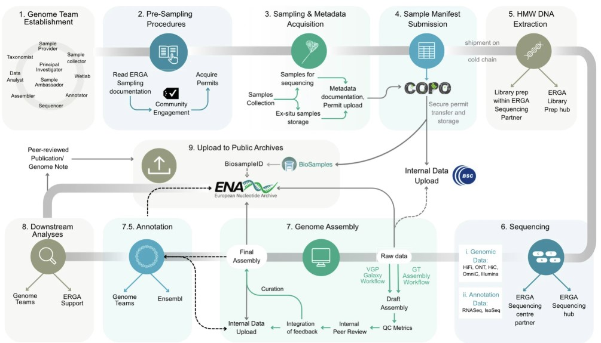
].footnote[https://www.nature.com/articles/s44185-024-00054-6]
Genome information: Genome availability, expected genome size, ploidy, etc
.pull-left[ How to collect informations?
- GoaT (Genome on a Tree)
- Bibliography
.image-5[
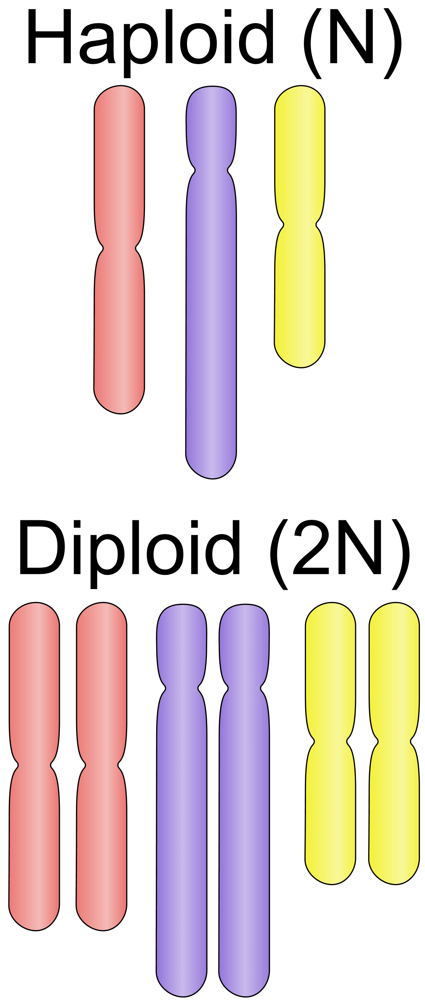
] ].pull-right[ .image-50[
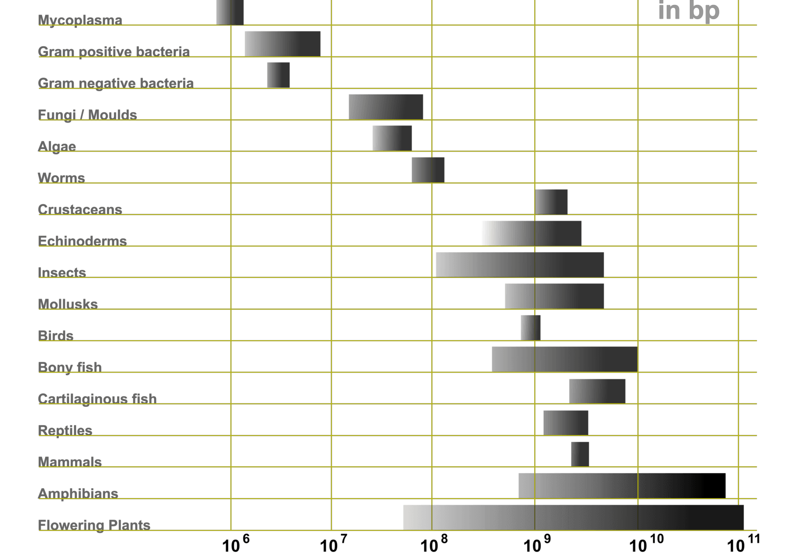
]]Higher ploidy -> harder to assemble => Increase of sequencing depth
.footnote[https://commons.wikimedia.org/w/index.php?curid=19537795
Daniel Hartl. Essential Genetics: A Genomics Perspective. Jones & Bartlett Learning. p. 177. ISBN 978-0-7637-7364-9. (2011).
]
Genome information: Heterozygosity level & Others
.pull-left[ .left[ Heterozygous: Locus-specific, diploid (2N) organism has two different alleles of a particular gene at the same locus
Heterozygosity is a metric used to indicate the probability that an individual is heterozygous for a particular allele
]]
.pull-right[
.image-100[
 ]]
]]
Higher heterozygosity -> harder to assemble => Increase of sequencing depth
- Karyotype: chromosome number
- Sex chromosome system: None, XY, ZW, UV,…
- Purity: possible presence of contaminants and/or symbionts?
- Is there any other useful data (NCBI, SRA, ENA, etc) that could improve my assembly?
.footnote[https://www.genome.gov/genetics-glossary/heterozygous]
DNA extraction tips
.left[
- Many DNA extraction protocol are available for a wide range of species/taxa (VGP, Darwin Tree of Life, Nanopore, PacBio, etc)
- Keep DNA samples from the same individual in case of library preparation or sequencing failure, need more coverage, new sequencing technology, etc
- Use a single individual and sequence a haploid, a highly inbred diploid organism, or an isogenic individual
]
Sequencing / Bioinformatics
Bioinformatics steps - Definitions
.image-5[
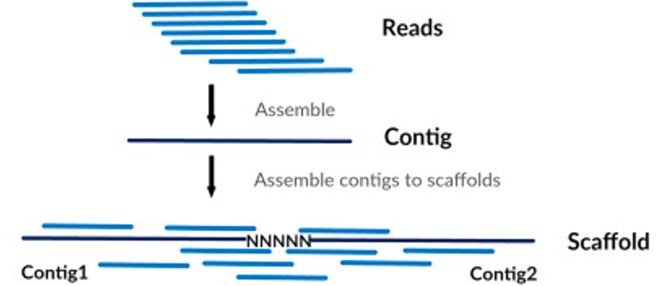
].left[
Contig: a contiguous sequence in an assembly. A contig does not contain long stretches of unknown sequences (aka assembly gaps).
The contig is usually generated using the long-reads data.
Scaffold: a sequence consists of one or multiple contigs connected by assembly gaps of typically inexact sizes. A scaffold is also called a supercontig, though this terminology is rarely used nowadays.
Usually, scaffolds are generated using the Hi-C data
Assembly: a set of contigs or scaffolds.
]
Assembly algorithms - Overlap-Layout-Consensus (OLC)
.pull-left[
.left[
1 node = 1 read
1 bridge = 1 overlap
Determine the best path through the graph
Remove redundant information
Process repeated many times
Sequences combined to form the final sequence
]]
.pull-right[ .image-100[
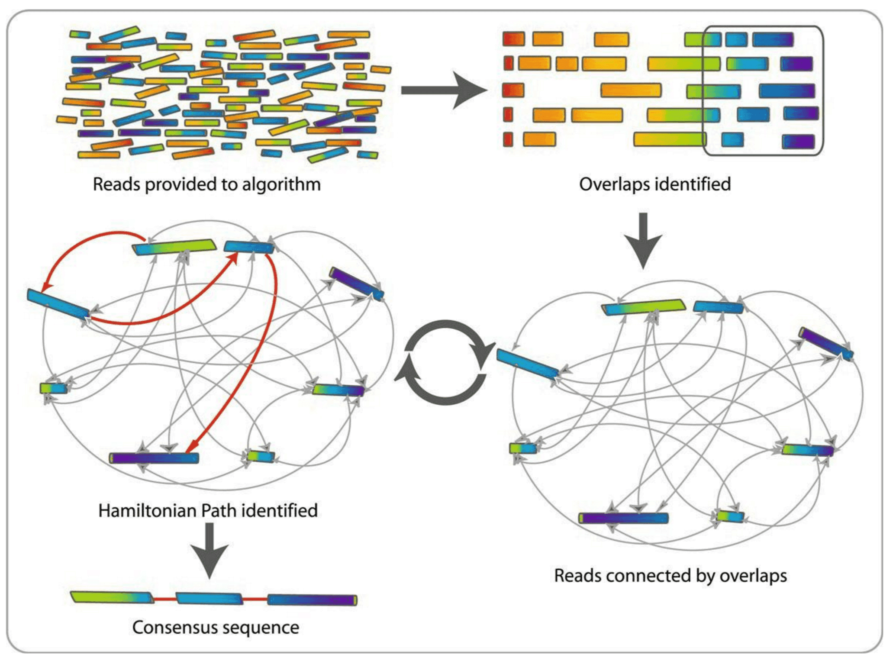
]].footnote[https://www.researchgate.net/figure/Overlap-layout-consensus-genome-assembly-algorithm-Reads-are-provided-to-the-algorithm_fig2_26266221 ]
Assembly algorithms - De Bruijn Graphs
.pull-left[
.left[
1 node = 1 k-mer
1 edge = 1 overlap
Find the path that consistently traverses the graph
]]
.pull-right[ .image-100[
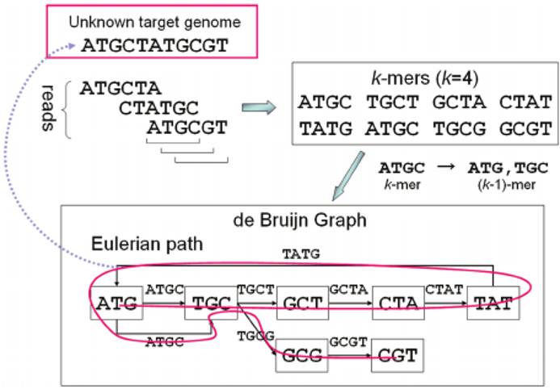
]].footnote[https://www.researchgate.net/figure/Illustration-of-de-Bruijn-graph-based-assembly_fig1_229437536 ]
Assembly - Scaffolding (and manual curation)
.left[
Hi-C: Capturing interactions between different parts of a genome by measuring the physical proximity of DNA segments in the nucleus:
Binding of closely interacting DNA regions.
DNA is digested, labeled, and joined using ligations to create hybrid fragments.
These fragments are sequenced to reveal which parts of the genome were spatially close, even if they are distant in terms of linear sequence.
Hi-C allows for the transition from the assembly of fragmented contigs to:
- a high-quality assembly, with scaffolds
- a whole chromosome assembly ]
.image-50[
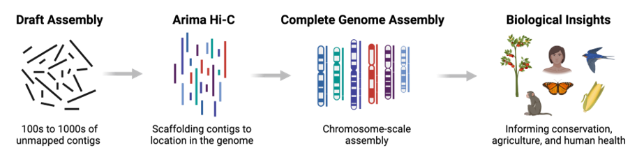
].footnote[https://arimagenomics.com/applications/genome-assembly/ ] —
Sequencing steps - The options
.left[ This mainly depends on the quantity and quality of DNA as well as the cost of the experiment but many parameters need to be considered before performing an NGS experiment:
- Short versus long reads or both
- Read length
- Read quality/error rate
- Genome read coverage/depth : Number of unique reads that include a given nucleotide in the reconstructed sequence.
-30X coverage mean that, on average, each nucleotide in the genome is covered bu 30 reads.
- Coverage = (read count * read length ) / total genome size
- Library preparation
- Available technology
- Downstream applications ]
Sequencing steps - The technologies
.left[ Sequencing technology for assembly:
- PacBio Hifi: long reads (up to 20kb)
- Nanopore: long reads and ultra-long read (up to 100kb)
- Illumina or MGI: short reads (up to 2x250bp) with high quality reads. Sequencing bias with AT/GC rich regions
Sequencing technology for scaffolding:
- Hi-C: restriction enzyme fragmentation (single, multiples sites or DNAse). Need huge amount of coverage. Providers : Arima Genomics, Phase Genomics, Dovetail Genomics
-
Optical mapping: technique to physically locate specific enzymes restriction sites or sequence motifs to produce DNA sequence fingerprints. Providers : BioNano, BGI
- Mate pair (deprecated)
- BAC/YAC/Fosmids (deprecated)
Typical sequencing strategies - EBP (Earth Biogenome Project) recommendation -
- Long-reads (PacBio HiFi or ONT) : 15x per haplotype
- Hi-C data (Arima / Illumina) Polishing is no longer necessary or recommended
]
Bioinformatics steps - Assembly quality
.left[
Different level of assembly exist today :
- Contig Assembly
- Scaffold assembly
- Chromosome-level assembly : When the number of scaffolds is the number of expected chromosomes, it means that 1 chromosome = 1 scaffold, and no large string of sequence is unlocated.
It can still contain gaps in between the scaffolds (shown as “NNNNNNNN” in the assembly)
- T2T (Telomere-to-Telomere) : Assembly without any gap (a chromosome level assembly without “NNNNN” sequences) ]
Bioinformatics steps - Definitions
.left[
Haplotig: a contig that comes from the same haplotype. In an unphased assembly, a contig may join alleles from different parental haplotypes in a diploid or polyploid genome.
Primary assembly: a complete assembly with long stretches of phased blocks.
Alternate assembly: an incomplete assembly consisting of haplotigs in heterozygous regions. An alternate assembly always accompanies a primary assembly. It is not useful by itself as it is fragmented and incomplete.
Haplotype-resolved assembly: sets of complete assemblies consisting of haplotigs, representing an entire diploid/polyploid genome.
]
.image-60[
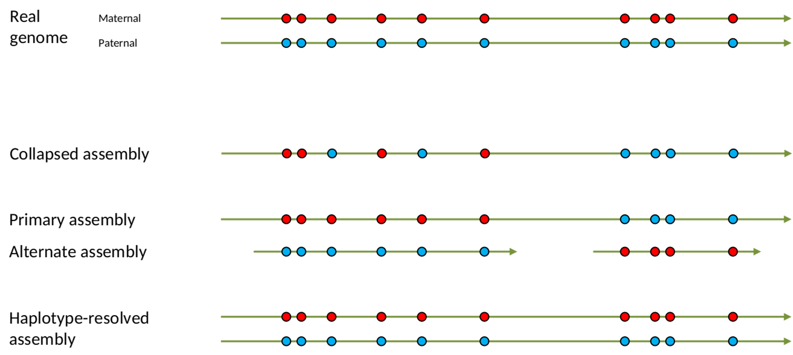
]Computational resources and requirements
.left[ To be successful, you must have sufficient computing resources (CPUS, RAM, walltime and storage).
- The resources needed are different for each step:
- Assembly
- Annotation
- Other analysis tools
- For genome assembly:
- Running times and RAM increase with data type and amount
- More data for large genomes, increase runtime/RAM/Storage
- Most of tools run on a single node: they are parallelized but not distributed
- For genome annotation:
- Mapping/alignment of external data (RNA-seq, proteins) can be parallelized and distributed
- Annotation process can be parallelized and distributed ]
Bioinformatics data formats
.left[ FASTA: a text-based format for representing either nucleotide sequences or amino acid (protein) sequences, in which nucleotides or amino acids are represented using single-letter codes. ]
.image-100[
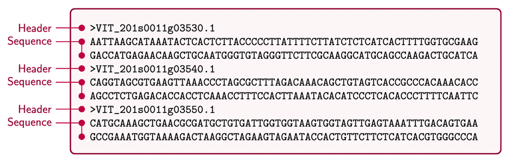
] Image licensed CC-BY 4.0 Hosseini et al. 2016.footnote[Hosseini, M., Pratas, D. & Pinho, A. J. A Survey on Data Compression Methods for Biological Sequences. Information 7, 56 (2016).]
Bioinformatics data formats
.left[ FASTQ: a text-based format for storing both a biological sequence (usually nucleotide sequence) and its corresponding quality scores (Phred). Both the sequence letter and quality score are each encoded with a single ASCII character for brevity. It’s the standard sequencing output for Illumina and MGI sequencers. ]
.image-100[
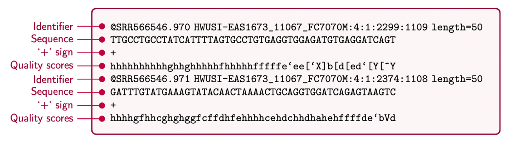
] Image licensed CC-BY 4.0 Hosseini et al. 2016.footnote[Hosseini, M., Pratas, D. & Pinho, A. J. A Survey on Data Compression Methods for Biological Sequences. Information 7, 56 (2016).]
Bioinformatics data formats
SAM (Sequence Alignment Map): a text-based format originally for storing biological sequences aligned to a reference sequence developed by Heng Li and Bob Handsaker et al.
BAM (Binary Alignment Map): the comprehensive raw data of genome sequencing; it consists of the lossless, compressed binary representation of the SAM format. It’s the standard sequencing output for PacBio sequencers.
CRAM (Compressed Reference-oriented Alignment Map): a compressed columnar file format for storing biological sequences aligned to a reference sequence.
.pull-left[ .image[
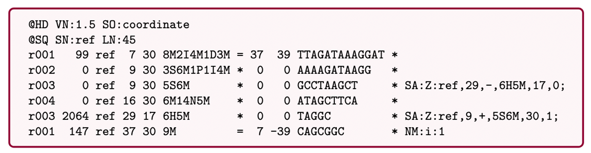
]].pull-right[ Image licensed CC-BY 4.0 Hosseini et al. 2016 ]
.footnote[Hosseini, M., Pratas, D. & Pinho, A. J. A Survey on Data Compression Methods for Biological Sequences. Information 7, 56 (2016).]
After the assembly, how do we assess its quality?
.image-100[
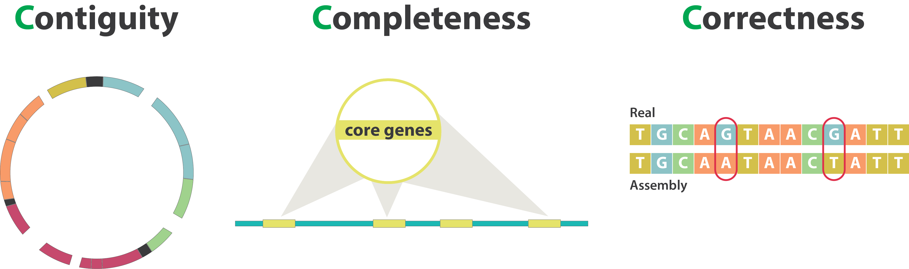
]Continuity : N50
.left[
N50: given a set of sequences of varying lengths, the N50 is defined as the length L of the shortest contig for which longer and equal length contigs cover at least 50% of the assembly.
L50: given a set of sequences of varying lengths, the L50 is defined as count of smallest number of sequences whose length sum makes up 50% of the assembly.
N50 describes a sequence length whereas L50 describes a number of sequences.
Example:
- Genome size = 100
- Sequence sorted by size list L = (25, 10, 10, 8 , 7, 7 , 6 , 5, 5, 5, 5, 3, 2, 2 ) = 100
- 50% of the total length is contained within sequences of at least 8bp: 25 + 10 + 10 + 8 ≥ 50 ]
.image-100[
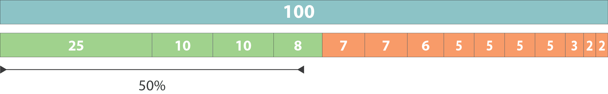
]N50 = 8 and L50 = 4
.footnote[Alhakami, H., Mirebrahim, H., & Lonardi, S. (2017). A comparative evaluation of genome assembly reconciliation tools. Genome biology, 18(1), 1-14.]
.pull-right[ .image-55[
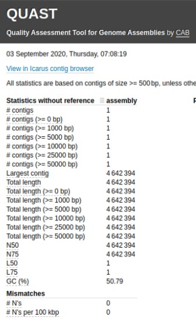
]].pull-left[
Tool to evaluate continuity : QUAST
- QUAST: for genome assemblies.
- MetaQUAST: for metagenomic datasets.
- QUAST-LG: for large genomes (e.g., mammalians).
- rnaQUAST: for RNAseq.
- Icarus: an interactive visualizer for these tools. ]
Completeness : BUSCO score
.pull-left[
BUSCO: Assessing genome assembly and annotation completeness with Benchmarking Universal Single-Copy Orthologs
Quantitative assessment of genome assembly based on evolutionarily informed expectations of gene content from near-universal single-copy orthologs.
.image-70[
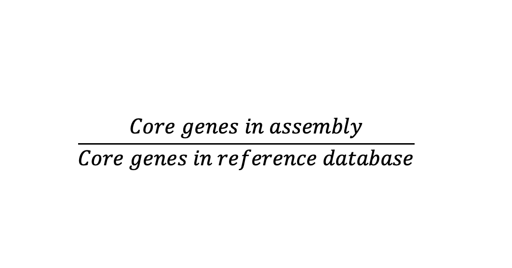
] ] .pull-right[ .image-70[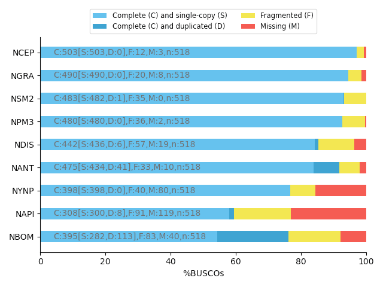
]].footnote[Tips: Reference databases are constructed using known genomes. Species with few/no close genomes available can have very bad scores.]
Correctness
** Proportion of the assembly that is free from mistakes**
- Indels / SNPs
- Mis-joins
- Repeat compressions
- Unnecessary duplications
- Rearrangements
→ Align back reads to the assembly and check for inconsistencies
Evaluation against reference genome (or second haplotype)
.image-30[
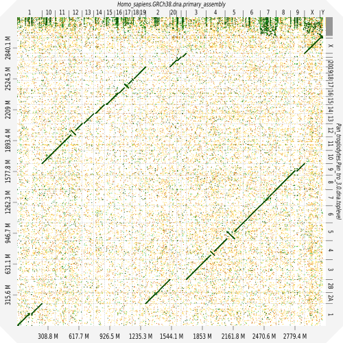
]Assembly QC Tips
-
The quality of an assembly is often validated by using other data from the same individual or from other individuals (RNA-Seq alignment, Hi-C alignment, DNA-Seq alignment,…).
-
The positions of the telomeric repeats in the chromosome assemblies are also of interesting to evaluate the correctness.
-
The identification of organelles (mitochondria, chloroplast,…) can also inform us about the quality of the assembly in terms of completness. However, the structure of the organelles may lead the assembler to think that they are repeats and he discards them.
-
In the case of diploid organisms, one of the classical problems of assemblies is the conservation of the two haplotypes. We obtains particular BUSCO / kmer / assembly size metrics that can be corrected by removing, “purging”, the haplotigs.
Key Points
- We learned the importance of preparing the project to ensure its success
- We learned the importance of surrounding ourselves with all the people who have knowledge of the different parts of the project (wet lab, sequencing, bioinformatics,...)
- We learned the definitions of bioinformatics terms used in genomes assembly
- We have seen the bioinformatics file formats used for these analyses
- To go further : [Deeper look into Genome Assembly algorithms](https://training.galaxyproject.org/training-material/topics/assembly/tutorials/algorithms-introduction/slides.html#1)
- We have seen the bioinformatics tools to assess the quality of an assembly
- To go further : [Genome assembly quality control](https://training.galaxyproject.org/training-material/topics/assembly/tutorials/assembly-quality-control/slides.html#1)
Thank you!
This material is the result of a collaborative work. Thanks to the Galaxy Training Network and all the contributors! Tutorial Content is licensed under
Creative Commons Attribution 4.0 International License.
Tutorial Content is licensed under
Creative Commons Attribution 4.0 International License.
References
- Hosseini, M., D. Pratas, and A. Pinho, 2016 A Survey on Data Compression Methods for Biological Sequences. Information 7: 56. 10.3390/info7040056
Funding
These individuals or organisations provided funding support for the development of this resource